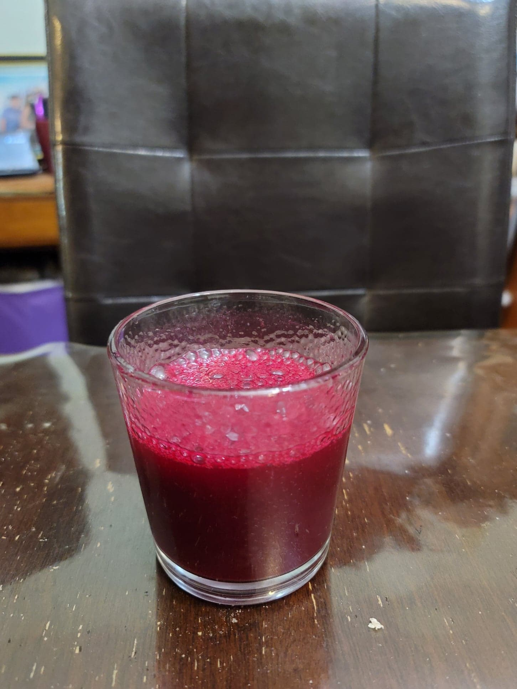

Colonche

Ingredients:
- 5-10 lb Prickly pears, peeled and 1/2 the peels reserved
- Optional: Piloncillo, to taste
- Optional: 1 Cinnamon stick
- Optional: 1 Fig leaf
Instructions:
- Juice the prickly pears and place into a large pot with the piloncillo. Bring to a boil and then reduce to a simmer. Stir until the piloncillo is dissolved. Let simmer for 30-120 minutes to reduce to preference. Then let cool completly to room temperature.
- Transfer the reduced juice to a large jar. Add in the prickly pear peels and cinnamon stick and fig leaf if using. Cover with a cheese cloth and let ferment for 3-4 days or to taste, decanting to 16 oz flip-top bottles after 2 days if desired. Serve room temperature or cold.